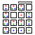

This application uses the original song by Y.Okubo. The song consists of 18 audio(mp3@128kbps) and 5 parts:"Intro", "A", "B", "C", and "Outro." This page describes the configuration for each audio.
The following table is the configuration for each audio. According to the table, "All" contains all parts(Intro, A, B, C, and Outro) of the song. Also, each song part uses the repeat region in Transpose and Track, and ICON SELECT in Mixer.
| Icon | Name | Song part |
|---|---|---|
| t00_SynthBa | All | |
| t01_Kick | ||
| t02_Snare | ||
| t03_CloseHH | ||
| t04_OpenHH | ||
| t05_Crash | ||
| t06_Splash | ||
| t07_Claves | ||
| t08_Pf | ||
| t09_Melo | A | |
|  | t10_Pad1 | |
| t11_Organ | B | |
| t12_Pad2 | ||
| t13_Seq2 | ||
| t14_Lead | C | |
| t15_Bell | ||
| t16_Str | ||
| t17_Seq3 |